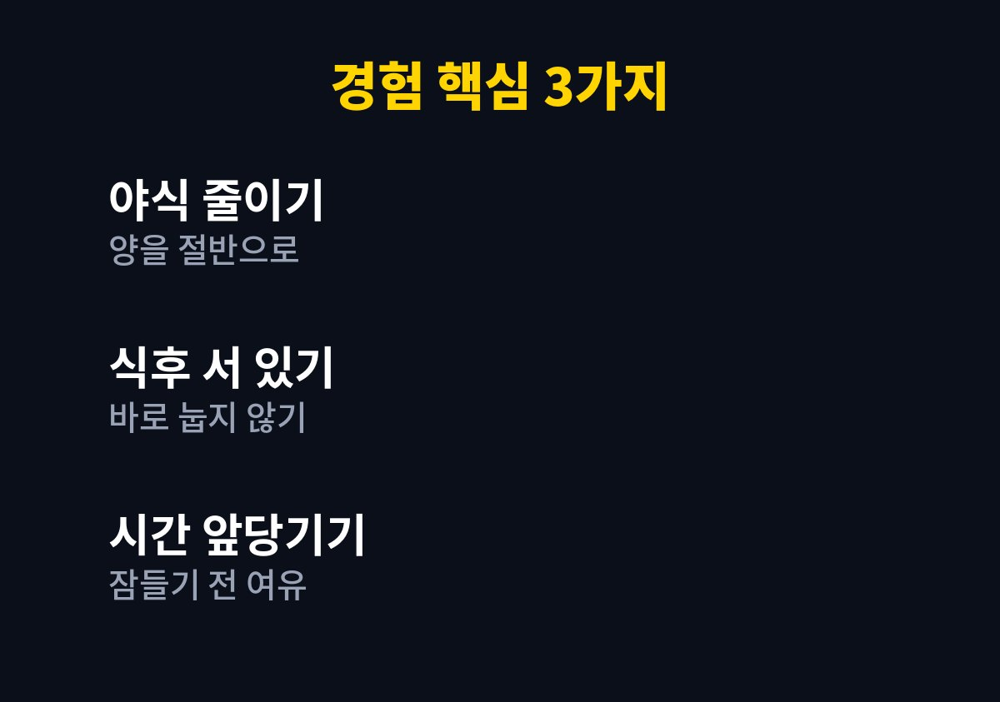
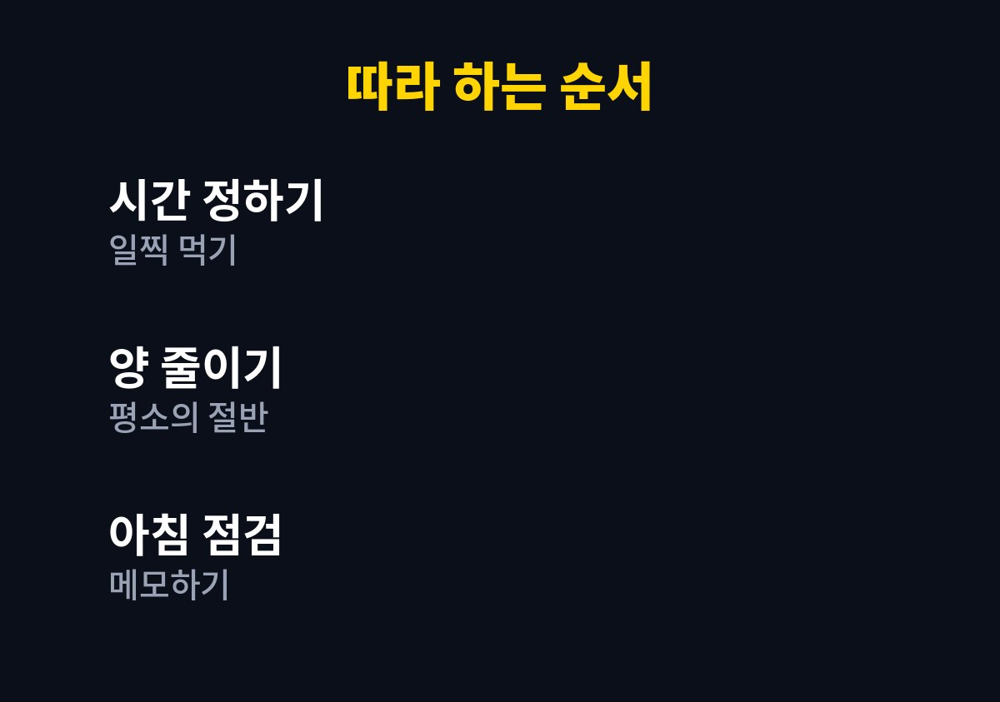

속쓰림 줄이는 습관, 헷갈리기 쉬운 부분을 먼저 짚고 순서대로 정리한다.
이 글은 늦은 저녁이나 야식 뒤에 속이 쓰리고 더부룩해 고민인 사람을 위해 쓴 글이다.
나는 온라인 쇼핑몰을 운영하는 1인 사업자이자 두 아이 아빠다.
퇴근 개념이 없다 보니 저녁이 늦어지던 내가 식습관을 바꾼 과정을 정리했다.
아이들을 재우고 나서야 일이 끝나면 그제야 허기가 몰려왔다.
그때 먹는 야식은 양도 많고 먹자마자 눕는 경우가 대부분이었다.
배가 부른 채로 잠들면 다음 날 하루가 무겁게 시작되곤 했다.
그래서 이 문제는 참는다고 해결되지 않는다고 느꼈다.
일하는 사람 중에는 저녁 식사가 밀려 야식으로 이어지는 경우가 흔하다.
속이 불편한 날이 반복되면 일의 집중력도 함께 떨어졌다.
다음 날 아침이면 속이 쓰리고 입안이 텁텁한 날이 잦았다.
피곤해서 그런 줄 알았지만 식사 시간과 자세를 돌아보니 원인이 보였다.
식후 바로 눕지 않는 것과 과식을 피하는 것은 여러 의료기관 자료에서도 생활 관리로 안내하는 내용이다.
식사 시간이 매일 달라지니 몸도 쉬는 시간을 갖지 못한다고 느꼈다.
특히 일이 몰리는 주문 폭주 기간에는 더 심해졌다.
그 습관이 쌓여 아침마다 속이 불편했다는 것을 인정하는 데 시간이 걸렸다.
생활을 바꾸려면 먼저 내 하루를 있는 그대로 보는 것이 필요했다.
아이가 아빠 얼굴이 피곤해 보인다고 말한 날이 있었다.
그날 이후 먹는 것부터 하나씩 점검해 보기로 했다.
한꺼번에 다 바꾸지 않고 한 가지씩 바꿔야 오래간다고 판단했다.
가장 먼저 야식의 양을 평소 식사의 절반 정도로 줄였다.
먹는 시간도 잠자리에 들기 한참 전으로 앞당기려고 애썼다.
배가 고플 때는 따뜻한 물을 먼저 마시고 잠시 기다려 보는 것도 도움이 되었다.
먹는 속도를 늦추고 천천히 씹는 것만으로도 더부룩함이 덜했다.
식사 후에는 바로 눕지 않고 설거지와 정리를 하며 서 있는 시간을 만들었다.
자극적인 음식과 늦은 시간의 과식은 컨디션이 안 좋은 날일수록 피하려고 했다.
야식이 당길 때는 과일이나 따뜻한 차처럼 가벼운 것으로 대신해 보았다.
그렇게 하니 먹고 나서 후회하는 날이 눈에 띄게 줄었다.

아래 순서는 내가 부담 없이 일주일씩 이어 본 방식이다.
사람마다 몸 상태가 다르므로 가능한 것부터 하나씩 적용하면 된다.
기록은 길게 쓸 필요 없이 한 줄이면 충분하다.
일주일이 지나면 어떤 습관이 나에게 맞는지 보인다.
다섯 가지를 한 번에 시작하기보다 두세 가지부터 시작하는 것이 현실적이다.
표는 내가 바꾼 습관을 비교한 것이며 모두에게 같은 기준은 아니다.
불편한 정도가 심해지면 습관 조절보다 진료가 먼저다.

1. 저녁 식사 시간을 정하고 되도록 잠자리보다 한참 앞당긴다.
2. 한 번에 먹는 양을 평소의 절반 정도로 줄인다.
3. 식사 직후에는 눕지 않고 정리와 가벼운 움직임으로 시간을 보낸다.
4. 자극적이고 기름진 야식은 일주일에 횟수를 정해 줄인다.
5. 일주일 뒤 아침 속 상태를 메모해 달라진 점을 확인한다.
| 습관 | 이전의 나 | 바꾼 후 |
| 야식의 양 | 배부를 때까지 | 절반 정도 |
| 식후 자세 | 바로 눕기 | 서서 정리하기 |
| 식사 시간 | 늦은 밤 | 조금 일찍 |
속쓰림은 흔한 불편이지만 원인이 한 가지가 아닐 수 있다.
나는 양과 시간, 자세만 바꿔도 아침 컨디션이 한결 나아졌다.
그래도 속쓰림이 몇 주 이상 이어지거나 체중이 줄고 삼킴이 불편하다면 꼭 전문의 진료를 받는 것이 좋다.
오늘 저녁부터 식사 시간을 한 시간만 앞당겨 보길 권한다.
작은 변화가 쌓이면 아침 속이 한결 편해지는 것을 느낄 수 있다.
나도 가끔 늦은 밤에 허기가 오지만 이제는 먼저 양과 자세를 떠올린다.
이 글이 늦은 저녁 때문에 고민인 분께 작은 출발점이 되면 좋겠다.
※ 2026년 기준 개인 경험과 공식 기준을 바탕으로 정리한 일반 건강 정보이며, 증상이 계속되거나 지병이 있다면 전문의와 상담하시길 바란다.